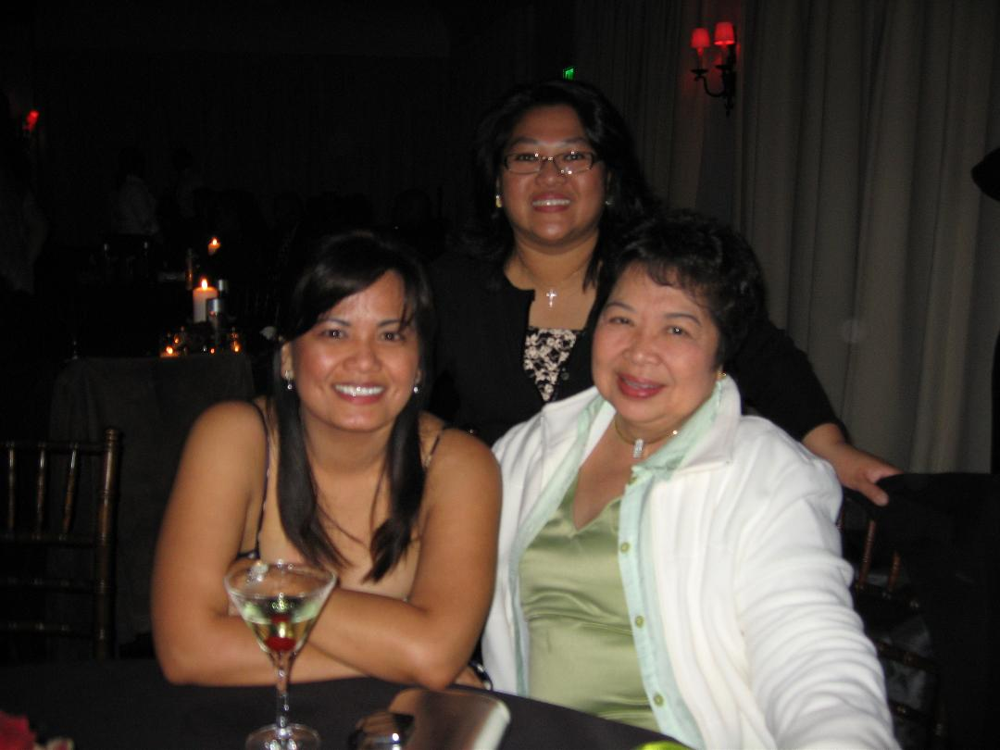

About me

Hello everyone ! My name is Catherine and I am a Financial Analyst for an Entertainment Co in Hollywood. Now i crave a career change. Finance and accounting has been my niche
since college and I am now financed out I have been thinking about changing careers and decided to take this bootcamp course. Wow ! Its completely outside my comfort zone and
indeed quite challenging, but determined to give it my best shot. I enjoying travelling and hope to check off a lot of places off my list. I was very young when i first travelled
on my own and loved it . Other passions include cooking and enjoying different cuisines, I grew up in a family that enjoy gatherings with friends and family enjoying sumptious
feasts.
I like to stay active and spend time outdoors, going on hikes, jogging, sometimes swimming. Im not the most nimble or flexible, but i do enjoy Yoga and practice it when i need
some calming work outs.
The last time i needed a challenge, i took some German and French language courses..Es war eine wundervolle erfahrung. Voila! maintenant je veux appredre autre chose !